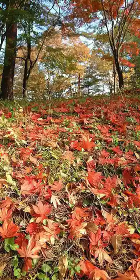
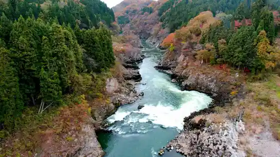
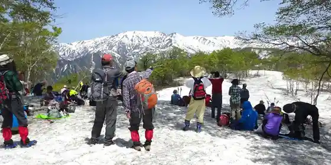
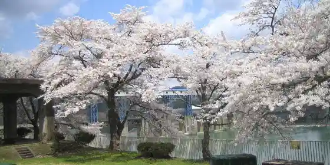

Nishiaizu Anza no Otomeyuri Gunsei Chi
Nishiaizu, Fukushima · 0241-48-1666 · Official / source link
Ikazuchiyama Park
Nishiaizu, Fukushima · 0241-48-1666 · Official / source link

Choshi no Kuchi
Nishiaizu, Fukushima · 0241-48-1666 · Official / source link

Kaya Yama
Nishiaizu, Fukushima · 0241-49-2515 · Official / source link

Ueno Shiri Hatsudensho no Sakura Namiki
Nishiaizu, Fukushima · 0241-45-2213 · Official / source link

Sayuri Park
Nishiaizu, Fukushima · 0241-45-4317 · Official / source link
Koya Chiku no Katakuri Gunsei Chi
Nishiaizu, Fukushima · 0241-45-2213 · Official / source link
Sakae Kawa Shuzo
Nishiaizu, Fukushima · 0241-45-2013 · Official / source link
Sayuri Oto Park
Nishiaizu, Fukushima · 0241-45-2900 · Official / source link
Tenku no Sato
Nishiaizu, Fukushima · 0241-48-1666 · Official / source link
Furusato Jiman Kan
Nishiaizu, Fukushima · 0241-45-3235 · Official / source link
Roadside Station Nishiaizu
Nishiaizu, Fukushima · 0241-48-1512 · Official / source link
Nishiaizu Kokusai Geijutsu Village
Nishiaizu, Fukushima · 0241-47-3200 · Official / source link
Aizu Nozawa Yado Miso Ramen
Nishiaizu, Fukushima · 0241-45-2213 · Official / source link
Yokihi Sakura
Nishiaizu, Fukushima · 0241-45-2213 · Official / source link
Fugen Zo Sakura
Nishiaizu, Fukushima · 0241-48-1666 · Official / source link
Sugiyama no Mizubasho Gunsei Chi
Nishiaizu, Fukushima · 0241-45-2213 · Official / source link
Onsen Kenko Hoyo Center Rotasuin
Nishiaizu, Fukushima · 0241-45-2900 · Official / source link
Okukawa
Nishiaizu, Fukushima · 0241-45-2213 · Official / source link
Iide Yama (Nishiaizu Gawa)
Nishiaizu, Fukushima · 0241-45-2213 · Official / source link
Su Kari Gaku
Nishiaizu, Fukushima · Official / source link
Kagamiyama
Nishiaizu, Fukushima · 0241-45-2213 · Official / source link
Torioi Kannon Nyoho Tera
Nishiaizu, Fukushima · 0241-45-2061 · Official / source link
Nyoho Tera no Takano Maki
Nishiaizu, Fukushima · 0241-45-2061 · Official / source link
Oyamatsumi Shrine
Nishiaizu, Fukushima · 0241-45-2323 · Official / source link
Sugiki Yuki Kaku no Hi
Nishiaizu, Fukushima · 0241-45-3244 · Official / source link
Shinpukuji
Nishiaizu, Fukushima · 0241-45-2213 · Official / source link
Koya Ta Iseki
Nishiaizu, Fukushima · 0241-45-3244 · Official / source link
Enman Jikan Oto Do
Nishiaizu, Fukushima · 0241-45-2213 · Official / source link